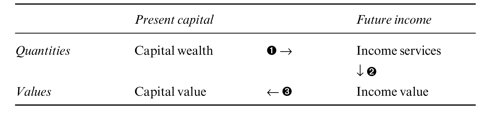

| 10 | Capitalization |
| Fiction, mirror or distortion? |
He had the same trouble as all intellectuals — he was ineffectual. He knew too many things, and they confused him.
—Louis-Ferdinand Céline, Journey to the End of the Night
How are we to theorize the all-embracing architecture of capital? The examples in the previous chapter suggest that capitalization is an encompassing social process of valuation in need of a comprehensive theory of value. The conventional neoclassical and Marxist approaches, though, lack such a theory and therefore fall back on narrow ‘economic’ explanations. In both cases, capitalization is explained in relation to the so-called material–productive processes of capitalism.
As usual, the starting points of the two approaches are diametrically opposed. Marx considers capital goods the real thing and nominal capitalization a mere fiction, whereas the neoclassicists view nominal capitalization as a mirror of capital goods (and vice versa). Yet in the end, because of their wrong starting point, the two schools meet in the middle of nowhere, with capitalization seen as an inescapable ‘distortion’. We have mentioned these biases several times in the book, and it is now time to look at them more closely.
From fiction to distortion: Marx’s view
Marx wrote before the corporation emerged as the dominant form of business organization, and therefore before capitalization came into its own. Nonetheless, he was familiar with the technique of discounting and offered one of the first attempts to understand the role of credit and financial markets in capitalist dynamics.
He started by juxtaposing two different entities: ‘actual’ capital versus ‘illusionary’ or ‘fictitious’ capital. Actual capital exists as commodities — means of production, work in progress and commodity money whose prices are governed by labour time, whether historical or current. By contrast, fictitious capital consists of ownership claims on earnings whose price is the present value of those earnings.134
Why is the latter capital ‘fictitious’? Marx lists three basic reasons. First, a claim on earnings often has no actual capital, or ‘principal’, to call on. This is the case of state debt, for instance. Here the capitalist lends money to the government, yet this money does not create — nor is it intended to create — means of production. Instead, it is spent on current operations. And since the government repays the money plus interest out of its revenues, the capitalist ends up having a claim not over actual capital, but merely over state taxes (or the printing press, as the case may be). Second, a claim on earnings, even on those generated by actual capital, extends into the future. It covers expected as well as current payments, and the two cannot be treated equally. Unlike present income, future income expectations may not materialize; and since their level cannot be known beforehand, their present value could end up being partly or wholly illusionary. Finally, a given flow of income, whether generated by actual capital or not, would create different levels of capitalization depending on the rate of interest (Marx 1909, Vol. 3: 546–47 and 550–51).
Clearly, actual and fictitious capitals are totally different creatures. They consist of different entities and are quantified through different processes — the former via past and current productive labour time, the latter through future earnings expectations and the rate of interest. So, when considered separately, their respective magnitudes and movements need have nothing in common. The problem, though, is that they cannot be considered separately. The capitalist system is denominated in prices, and as Marx himself conceded, prices are affected by both fictitious and actual accumulation. As a result, any divergence of the former from the latter is bound to ‘distort’ the value system.
How big is this distortion? Marx’s own view was ambivalent. On the one hand, he made it sound as if fictitious capital contaminates the price system to the point of making it incomprehensible:
All connection with the actual process of self expansion of capital is thus lost to the last vestige, and the conception of capital as something which expands itself automatically is thereby strengthened. . . . The accumulation of the wealth of this class [the large moneyed capitalists] may proceed in a direction very different from actual accumulation. . . . Moreover, everything appears turned upside down here, since no real prices and their real basis appear in this paper world, but only bullion, metal coin, notes, bills of exchange, securities. Particularly in the centers, in which the whole money business of the country is crowded together, like London, this reversion becomes apparent; the entire process becomes unintelligible.
(Marx 1909, Vol. 3: 549, 561 and 576, emphasis added)
On the other hand, Marx seemed to believe that the relationship between the two types of capital can be mapped. Focusing on the accumulation of ‘money capital’, he asks:
To what extent is it, and is it not, an indication of an actual accumulation of capital, that is, of reproduction on an enlarged scale? The so-called plethora of capital, an expression used only with reference to the interest-bearing capital, is it only a peculiar way of expressing industrial overproduction, or does it constitute a separate phenomenon alongside of it?
(Vol. 3: 559)
Marx himself never provided a systematic answer to this question. As noted, he was writing early in the processes and perhaps believed that capitalism would collapse well before fictitious capital could become entrenched. The Marxists after him, however, could no longer ignore the process. Consequently, they have tried to piece together his scattered insights and, weaving in their own interpretation, yield a Marxist theory of capitalization.
According to the careful reconstruction of Michael Perelman (1990), Marx saw fictitious capital as having a contradictory effect. As a form of credit it helps make the organization of production much more flexible. Yet as a source of information it sends the ‘wrong’ price signals, and in so doing undermines the coordination of production.
During the boom, the two processes diverge. Ballooning fictitious capital facilitates investment, while growing price distortions amplify the misallocation of resources. These are conflicting trajectories, however, and therefore cannot continue forever. Sooner or later a crisis strikes, and the ‘excessive imbalance’ between prices and values is rectified:
In order for the price system to work, financial forces should cause fictitious capitals to move in directions that parallel changes in reproduction values. . . . By losing any relationship to the underlying system of values, strains eventually build up in the sphere of production until a crisis is required to bring the system back into a balance, whereby prices reflect the real cost of production. The fiction of fictitious value cannot be maintained indefinitely. At some unknown time in the future, prices will have to return to a rough conformity with values. . . .
(Perelman 1990: 83)
And so we come full circle. Recall that Marx began by suggesting that actual and fictitious capitals are two different entities. But, then, since fictitious capital distorts the relationship between prices and labour time, it serves to undermine Marx’s labour theory of value. To uphold the labour theory of value, this distortion must be neutralized. And the only way to neutralize it is to assume that the system periodically ‘equilibrates’ fictitious and actual capital. In the end, the two entities, although different in essence, have to assume the same appearance.
There is of course another possibility altogether, and that is that prices do not obey the labour theory of value. In this latter case, capitalization has no material/productive benchmark to converge on, so we need another theory to explain its trajectory and oscillation.
Unfortunately, there is no way to choose between these two opposing views for the simple reason that labour values cannot be known even if they exist. This impossibility means that we cannot tell whether prices deviate from values, and therefore whether fictitious capital is larger or smaller than the underlying ‘actual’ capital.
The net result is to leave Marxists with no scientific theory of capitalization, and therefore with neither a unique explanation for nor an alternative to the actual capitalism of the present. As noted in Chapter 7, this void has been filled by culturalists and state theorists of various denominations who usually have no clue as to what they are missing. And the few who still try to study fictitious capital seriously are fighting a losing battle. Being unable to use labour time as their anchor, most have gravitated toward the hedonic measures of neoclassical economics. Their empirical studies — including those that have adopted Minsky’s financial instability hypothesis (1975; 1982) — see credit and fictitious capital as oscillating around the util-denominated ‘capital stock’ publicized by the national accounts. And with orthodox measurements come orthodox explanations, leading one observer to conclude that ‘there is no qualitatively distinct radical monetary perspective’ and that no monetary approach within radical political economy can be ‘prevalidated as Marxian’ (Dymski 1990: 58–59).135
From mirror to distortion: the neoclassical view
Contrary to the Marxists, who begin from two different entities, the neoclassicists start from equivalence: capitalization both derives from and reflects on capital goods. The stylized expression of this symmetry is due to Irving Fisher. In an article aptly titled ‘What is Capital?’ (1896), Fisher opens by devising a consistent set of definitions. His starting point is a distinction between ‘stock’ (quantity at a point in time) and ‘flow’ (quantity per unit of time). Capital is a stock, income is a flow. Capital gives rise to income, whereas income gives capital its value. The precise correspondence between these concepts is articulated in his book The Rate of Interest (1907):
The statement that ‘capital produces income’ is true only in the physical sense; it is not true in the value sense. That is to say, capital-value does not produce income-value. On the contrary, income-value produces capital-value. . . . [W]hen capital and income are measured in value, their causal connection is the reverse of that which holds true when they are measured in quantity. The orchard produces the apples; but the value of the apples produces the value of the orchard. . . . We see, then, that present capital-wealth produces future income-services, but future income-value produces present capital-value.
(pp. 13–14, original emphases)
The feedback loop is illustrated in the following table (p. 14):
Table 10.1: Fisher’s house of mirrors

Explanation: In the material world, depicted by step 1 of the sequence, capital wealth (measured by the physical quantity of capital goods) produces future income services (similarly measured by their physical quantity). In the nominal world, depicted by stage 3, the income value of the future services (measured in dollars) is discounted by the prevailing rate of interest to generate the present value of capital (also measured in dollars). The two worlds are connected through stage 2, whereby the physical quantity of future income services determines their dollar price.
Hypothetical numerical illustration: Intel has 10 million units of capital wealth, which, during its future life, will produce 1 billion units of income services in the form of microchip-generated utils (step 1). These 1 billion utils’ worth of services, spread over the life of the capital wealth, will fetch 100 billion dollars’ worth of future profits and interest (step 2), which in turn are discounted to 50 billion dollars’ worth of capital value (step 3).
Unfortunately, this neat sequence cannot work. As we saw in previous chapters, a collection of capital goods cannot have a definite physical quantity, so it is impossible to say how much services these capital goods ‘produce’ (thus annulling step 1). And since we don’t know the physical productivity of capital goods, obviously we cannot deduce from this productivity either their nominal value (cancelling step 2), or their dollar capitalization (invalidating step 3). So we are still in a bind. While money income is routinely discounted to its present value, there is no way to connect the resulting dollar capitalization with the ‘physical quantity’ of the so-called underlying capital goods.
At this point, then, the neoclassical search should have been called off. Needless to say, that didn’t happen. On the contrary, the quest for the Holy Grail continues unabated. Neoclassical analysts and theorists remain convinced, today perhaps more than ever, that there exists an invisible bridge between the under world of machines and technology and the over world of discounted capitalization. And they certainly have put their mouth where the money is. Over the past century, they have built numerous models, estimated countless regressions and written billions of words — all with the purpose of keeping the bridge standing and the faith unbending.
So in order not to nip their investment in the bud, let’s put aside our concern for logical consistency and in what follows assume, along with the believers, that the material quantity of capital goods (whether that quantity ‘exists’ or not) can be measured by their prices. This assumption puts Fisher’s ‘capital value’ and ‘capital wealth’ on the same monetary footing, denominated in dollars and cents. And since the two entities are now perfectly comparable, the test becomes pragmatic: for the doctrine to stand there must be empirical correspondence between capitalization and the money price of capital goods.
Sadly, though, even this watered-down correspondence doesn’t exist. It turns out not only that the two magnitudes are very unequal, but that their rates of growth oscillate in opposite directions. Let’s see why.
Microsoft vs General Motors
Begin with a simple example. Figure 10.1 provides basic information on two leading corporations in the United States — Microsoft and General Motors (GM). There are four sets of bars in the chart, each presenting a different set of facts about the two companies. The grey bars are for GM, the black ones for Microsoft. On top of each of the Microsoft bars, we denote the per cent ratio of Microsoft relative to GM.
Figure 10.1: General Motors versus Microsoft, 2005
Note: The per cent figures indicate, for any given measure, the size of Microsoft relative to GM.
Source: Compustat through WRDS (series codes: data29 for employees; data8 for net plant and equipment; data24 for price; data54 for common shares outstanding; data181 for total liabilities).
The two sets of bars on the left present data on the ‘material’ operations of the two firms. In terms of relative employment, depicted by the first set, GM is a giant and Microsoft is a dwarf. In 2005, GM had 335,000 workers, 5.5 times more than Microsoft’s 61,000. The second set of bars denotes the respective dollar value of the companies’ plant and equipment, measured in historical cost. In line with our concession, we assume that these dollar values are proportionate to the ‘productive capacity’ of the two companies. According to these statistics, in 2005, GM’s ‘productive capacity’, standing at $78 billion, was 33 times larger than Microsoft’s, whose capital goods were worth a mere $2.3 billion.
The two sets of bars on the right show the companies’ respective capitalization. Here the picture is exactly the opposite, with Microsoft being the giant and GM the dwarf. In 2005, Microsoft’s equity had a market value of $283 billion, nearly 26 times GM’s $11 billion. And even if we take the sum of debt and market value (which supposedly stands as the total claim on a company’s productive assets), the GM total of $475 billion was only 55 per cent greater than Microsoft’s $306 billion — a far cry from its relatively huge work force and massive plant and equipment.
The usual response to such a discrepancy, from Alfred Marshall onward, points to ‘technology’ and ‘human capital’. This is the ‘knowledge economy’, tells us Peter Drucker (1969: Ch. 12). Obviously, Microsoft’s disproportionate market value must be due to its superior know-how, packed as ‘intangibles’. And since intangibles are not included in the plant and equipment category of corporate balance sheets on the one hand yet bear on capitalization on the other, we end up with a market value that deviates, often considerably, from the tangible capital stock.
This is a popular academic claim, and for a good reason: it is entirely reversible and totally irrefutable. To illustrate, simply consider the reverse assertion — namely that GM has more know-how than Microsoft. Since nobody knows how to quantify technology, how can we decide which of the two claims is correct?
Tobin’s Q: adding intangibles
The discrepancy between capitalization and real assets is by no means limited to individual firms or particular time periods. In fact, it appears to be the rule rather than the exception. Consider Figure 10.2, which plots the so-called Tobin’s Q ratio for US corporate sector from 1932 to 2006.136 In this figure, Tobin’s Q measures the ratio between corporate capitalization and capital goods: for each year, the series takes the market value of all outstanding corporate stocks and bonds and divides it by the current replacement cost of corporate fixed assets (plant and equipment). Since both magnitudes are denominated in current prices, the ratio between them is a pure number.
Figure 10.2: Tobin’s Q in the United States
Note: The market value of corporate equities and bonds is net of foreign holdings by US residents.
Source: U.S. Bureau of Economic Analysis through Global Insight (series codes: FAPNREZ for current cost of corporate fixed assets). The market value of corporate equities and bonds splices series from the following two sources. 1932–1951: Global Financial Data (market value of corporate stocks and market value of bonds on the NYSE). 1952–2007: Federal Reserve Board through Global Insight (series codes: FL893064105 for market value of corporate equities; FL263164003 for market value of foreign equities held by US residents; FL893163005 for market value of corporate and foreign bonds; FL263163003 for market value of foreign bonds held by US residents).
Here too we uphold our theoretical concession. We assume that Fisher’s symmetry between real assets and capitalization, although failing the materialistic test, can still hold in nominal space. Now, if this assumption were true to the letter, Tobin’s Q should have been 1. One dollar’s worth of ‘real assets’ would create a definite future flow of money income, and that flow, once discounted, would in turn generate one dollar’s worth of market capitalization. The facts, though, seem to suggest otherwise.
There are two evident anomalies. First, the historical mean value of the series is not 1, but 1.24. Second, the actual value of Tobin’s Q fluctuates heavily — over the past 75 years it has oscillated between a low of 0.6 and a high of 2.8. Moreover, the fluctuations do not look random in the least; on the contrary, they seem fairly stylized, moving in a wave-like fashion. Let’s inspect these anomalies in turn.
Why is the long-term average of Tobin’s Q higher than 1? The conventional answer points to mismeasurment. To reiterate, fixed assets consist of plant and equipment; yet, as we have already seen in the case of Microsoft vs GM, capitalization accounts for more than just plant and equipment. And since Tobin’s Q measures the ratio between the whole and one of its parts, plain arithmetic tells us the result must be bigger than 1. But, then, how much bigger? Even if we accept that there is mismeasurement here, the question remains as to why Tobin’s Q should average 1.24, rather than 1.01 or 20 for instance. And here, too, just like in the case of Microsoft vs GM, the answer is elusive.
To pin down the difficulty, let’s examine the structure of a balance sheet a bit more closely. Recall that corporations have two types of assets: tangible and intangible.137 According to the neoclassical system of classification, tangible assets consist of capital goods — machines, structures and recently also software. Intangible assets, by contrast, represent knowledge, technology, organization, goodwill and other metaphysical entities. Mainstream economists consider both types of assets productive, and the accountants concur — but with a reservation. Although tangible and intangible assets are both ‘real’, they cannot always be treated in the same way.
The reason is prosaic. Tangible assets are bought and sold on the market and therefore have a universal price. Since the market is assumed to know all, this price is treated as an objective quantity and hence qualifies for inclusion in the balance sheet. By contrast, most intangible assets are produced by the firm itself. They are generated through internal R&D spending, in-house advertisement expenditures and sundry other costs associated with the likes of ‘corporate re-engineering’ and ‘structural re-organisation’. These are not arm’s-length transactions. They are not subject to the universalizing discipline of the market, and therefore the intangible assets they generate lack an ‘objective’ price. And items that do not have an agreed-upon quantity, no matter how productive, cannot make it into the balance sheet. The best the accountants can do is to list them as current expenditures on the income statement.
There are two exceptions to the rule, though. One exception is when companies purchase pre-packaged intangibles directly through the market — for instance, by acquiring a franchise, patent, trademark, or copyright. The other is when one corporation acquires another at a price that exceeds the acquired company’s book value. Since the merger does not create new tangible assets, the accountants assume that the premium must represent the intangible assets of the new formation. They also assume that since this premium is determined by the market, it must be objective. And given that the intangibles are objectively measured, the accountants feel safe enough to include them in the balance sheet.
So all in all we have three categories: (1) tangible assets that are included in the balance sheet, (2) intangible assets that are included in the balance sheet, and (3) intangible assets that are not included in the balance sheet. Now, as noted, fixed assets comprise only the first category, whereas capitalization reflects the sum of all three, and according to the conventional creed it is this mismatch that explains why the long-term average of Tobin’s Q differs from 1.
The historical rationale goes as follows. Over the past several decades, US-based corporations have undergone an ‘intangible revolution’. Their economy has become ‘high-tech’, with knowledge, information and communication all multiplying manifold. As a consequence of this revolution, the growth of tangible assets decelerated, while that of intangible assets accelerated. And how do we know the extent of this divergence? Simple, say the neoclassicists. Subtract from the market value of firms the market price of their fixed assets, and then assume that, since the market knows all, the difference equals the quantity of intangibles.
Using this standard method, a recent study of the S&P 500 companies estimates that, over the past thirty years, the ratio between their market value and the book value of their tangible assets has risen more than fourfold: from 1.2 in 1975 to 5 in 2005 (Cardoza et al. 2006). The increase implies that in 1975 intangibles amounted to 17 per cent of the total assets, whereas in 2005 they accounted for as much as 80 per cent. Much of this increase is attributed to the growth of out-of-balance-sheet intangibles, whose share of market capitalization during the period is estimated to have risen from 15 to 65 per cent.
Conclusion: the 1.24 mean value of Tobin’s Q is hardly a mystery. It is simply another ‘measure of our ignorance’ — in this case, our inability to measure intangibles directly. Fortunately, the problem can be circumvented easily by indirect imputation. And, indeed, looking at Figure 10.2, we can see that much of the increase in Tobin’s Q occurred over the past couple of decades — coinciding, as one would expect, with the upswing of the ‘intangible revolution’.
This rationale may sound soothing to neoclassical ears, but accepting it must come with some unease. To begin with, the neoclassicists don’t really ‘measure’ intangibles; rather, they deduce them, like the ether, as a residual. Moreover, according to their own imputations, this residual accounts for as much as 80 per cent of total market value. To accept this magnitude as a fact is to make the ‘material’ basis of the theory (shaky as it is) account for no more than 20 per cent of market capitalization — hardly an impressive achievement for a theory that calls itself ‘mainstream’. Moreover, the imputation method itself doesn’t seem very robust. Given that the quantity of intangibles is equal to the difference between market value and tangible assets, oscillations in market value imply corresponding variations in intangible assets. But, then, why would the quantity of a productive asset, no matter how intangible, fluctuate — and often wildly — even from one day to the next?
Boom and bust: adding irrationality
The solution to the latter riddle is to invoke irrationality. In this augmented neoclassical version, capitalized market value consists of not two components, but three: in addition to tangible and intangible assets, it also includes an amount reflecting the excessive optimism or pessimism of investors. And this last component, goes the argument, serves to explain the second anomaly of Tobin’s Q — namely its large historical fluctuations.
This irrationality rationale is illustrated in Figure 10.3. To explain it, let’s backtrack and refresh the basics of rational economics. During good times, goes the argument, capitalist optimism causes investors to plough back more profits into productive assets. During bad times, the process goes in reverse, with less profit earmarked for that purpose. As a result, the growth of ‘real’ assets tends to accelerate in an upswing and decelerate in a downswing. This standard pattern is illustrated by the thick line in the figure. The data measure the rate of change of the current cost of corporate fixed assets (the denominator of Tobin’s Q), with the series smoothed as a 10-year moving average in order to accentuate its long-term pattern. According to the figure, the US corporate sector has gone through two very long ‘real’ accumulation cycles (measured in price terms), the first peaking in the early 1950s, the second in the early 1980s.
Figure 10.3: The world according to the scriptures
* The value for each year is computed in two steps: first, by calculating the deviation of the growth rate of the (smoothed) ‘real’ series from its historical mean; and, second, by adding 2.5 times the value of the deviation to the historical mean.
Note: Series are smoothed as 10-year moving averages.
Source: U.S. Bureau of Economic Analysis through Global Insight (series codes: FAPNREZ for current cost of corporate fixed assets).
The vigilant reader will note that the accumulation process here reflects only the tangible assets — for the obvious reason that the intangible ones cannot be observed directly. But this deficiency shouldn’t be much of a concern. Since neoclassical economists view intangible and tangible assets as serving the same productive purpose, they can assume (although not prove) that their respective growth patterns, particularly over long periods of time, are more or less similar.138 So all in all, we could take the thick line as representing the overall accumulation rate of ‘real’ capital, both tangible and intangible (denominated in current dollars terms to bypass the impossibility of ‘material’ quantities).
Now this is where irrationality comes in. In an ideal neoclassical world — perfectly competitive, fully transparent and completely informed — Fisher’s ‘capital wealth’ and ‘capital value’ would be the same. Capitalization on the stock and bond markets would exactly equal the dollar value of tangible and intangible assets. The two sums would grow and contract together, moving up and down as perfect replicas. But even the neoclassicists realize that this is a mere ideal.
Ever since Newton, we know that pure ideas may be good for predicting the movement of heavenly bodies, but not the folly of men. Newton learned this lesson the hard way after losing plenty of money in the bursting of the ‘South Sea Bubble’. Two centuries later he was joined by no other than Irving Fisher, who managed to sacrifice his own fortune — $10 million then, $100 million in today’s prices — on the altar of the 1929 stock market crash.
So just to be on the safe side, neoclassicists now agree that, although capitalization does reflect the objective processes of the ‘real economy’, the picture must be augmented by human beings. And the latter, sadly but truly, are not always rational. Greed and fear cloud their vision, emotions upset their calculations and passion biases their decisions — distortions that are further amplified by government intervention and regulation, lack of transparency, insider trading and other such unfortunate imperfections. All of these deviations from the pure model lead to irrationality and end in mispriced assets.
But not all is lost. Convention has it that there is nonetheless order in the chaos, a certain rationality in the irrationality. The basic reason is that greed tends to operate mostly on the upswing, whereas fear usually sets in in the downswing. ‘We tend to label such behavioural responses as non rational’, explains Alan Greenspan (2008), ‘But forecasters’ concerns should be not whether human response is rational or irrational, only that it is observable and systematic’. The regularity puts limits on the irrationality; limits imply predictability; and predictability helps keep the faith intact and the laity in place.
The boundaries of irrationality are well known and can be recited even by novice traders. The description usually goes as follows. In the upswing, the growth of investment in productive assets fires up the greedy imagination of investors, causing them to price financial assets even higher. To illustrate, during the 1990s developments in ‘high-tech’ hardware and software supposedly made investors lose sight of the possible. The evidence: they capitalized information and telecommunication companies, such as Amazon, Ericsson and Nortel, far above the underlying increase in their ‘real’ value. A similar scenario unfolded in the 2000s. Investors pushed real-estate capitalization, along with its various financial derivatives and structured investment vehicles, to levels that far exceeded the underlying ‘actual’ wealth. The process, which neoclassicists like to think of as a ‘market aberration’, led to undue ‘asset-price inflation’. Naturally, the capitalization created by such ‘bouts of insanity’ is mostly ‘fake wealth’. It represents ‘fictitious value’ and leads to inevitable ‘bubbles’.139 But there is nonetheless a clear positive relationship here: the irrational growth of ‘fake wealth’, although excessive, moves in the same direction as the rational growth of ‘real wealth’.
The process is said to invert during a bust. This is where fear kicks in. The ‘real’ economy decelerates, but investors, feeling as if the sky is falling, bid down asset prices far more than implied by the ‘underlying’ productive capacity. A famous illustration is offered by the Great Depression. During the four years from 1928 to 1932, the dollar value of corporate fixed assets contracted by 20 per cent, while the market value of equities collapsed by an amplified 70 per cent (we have no aggregate figures for bonds). A similar ‘undershooting’ occurred during the 1997 Asian financial crisis, with market value contracting by 50 per cent in many cases, against a growth slowdown or a very moderate decline in the dollar value of the ‘real’ capital stock. Yet here, too, the relationship is clear: the irrational collapse of ‘fictitious value’, however exaggerated, moves together with the rational deceleration of ‘productive wealth’.
This bounded irrationality is illustrated by the thin line in Figure 10.3. Note that this series is a hypothetical construct. It describes what the growth of capitalization might look like when neoclassical orthodoxy is augmented by ‘irrationality’ and ‘market aberrations’. The value for each year in the hypothetical series is computed in two steps. First, we calculate the deviation of the growth rate of the (smoothed) ‘real’ series from its historical mean (so if the smoothed growth rate during the year is 8 per cent and the historical mean rate is 6.7 per cent, the deviation is 1.3 per cent). Second, we add 2.5 times the value of the deviation to the historical mean (so in our example, the hypothetical smoothed growth rate would be 2.5 × 1.3 + 6.7 = 9.95 per cent). The coefficient of 2.5 is purely arbitrary. A larger or smaller coefficient would generate a larger or smaller amplification, but the cyclical pattern would remain the same.
This simulation solves the riddle of the fluctuating Tobin’s Q. It shows how, due to market imperfections and investors’ irrationality, the growth of capitalization overshoots ‘real’ accumulation on the upswing, therefore causing Tobin’s Q to rise, and undershoots it on the downswing, causing Tobin’s Q to decline.
And so everything falls into place. Tobin’s Q averages more than 1 due to an invisible, yet very real intangible revolution. And it fluctuates heavily — admittedly because the market is imperfect and humans are not always rational — but these oscillations are safely bounded and pretty predicable. Capitalization indeed deviates from the ‘real’ assets, though in the end it always reverts back to the ‘fundamentals’.
Or does it?
The gods must be crazy
It turns out that while the neoclassical priests were busy fortifying the faith, the gods were having fun with the facts. The result is illustrated in Figure 10.4 (where both series again are smoothed as 10-year moving averages). The thick line, as in Figure 10.3, shows the rate of change of corporate fixed assets measured in current replacement cost. But the thin line is different. Whereas in Figure 10.3 this line shows the rate of growth of capitalization stipulated by the theory, here it shows the actual rate of growth as it unfolded on the stock and bond markets. And the difference couldn’t have been starker.
Figure 10.4: US capital accumulation: which is the ‘real’, which the ‘fictitious’?
Note: The market value of corporate equities and bonds is net of foreign holdings by US residents. Series are smoothed as 10-year moving averages.
Source: See Figure 10.2.
The gyrations of capitalization, instead of amplifying those of ‘real’ assets, move in exactly the opposite direction. It is important to note that we are dealing here not with short-term fluctuations of the business cycle, but with very long-term waves of roughly 30-year duration. Furthermore, the pattern seems anything but accidental. In fact, it is rather systematic: whenever the growth rate of ‘real’ assets decelerates, the growth rate of capitalization accelerates, and vice versa.140
This reality puts the world on its head. One could perhaps concede that ‘real’ assets do not have a material quantum — yet pretend, as we have agreed to do here, that somehow this nonexistent quantum is proportionate to its dollar price. One could further accept that the dollar value of ‘real’ assets is misleading insofar as it excludes the invisible ‘dark matter’ of intangible assets (up to 80 per cent of the total) — yet nonetheless be convinced that these invisible–intangible assets follow the same pattern as the visible–tangible ones. Finally, one could allow economic agents to be irrational — yet assume that their irrational pricing of assets ends up oscillating around the rational ‘fundamentals’ (whatever they may be). But it seems a bit too much to follow Fisher and claim that the long-term growth rate of capitalization is driven by the accumulation of ‘real’ assets when the two processes in fact move in opposite directions.
And, yet, that is precisely what neoclassicists (and Marxists as well) seem to argue. Both emphasize the growth of real assets as the fountain of riches — while the facts say the very opposite. According to Figure 10.4, during the 1940s and 1970s, when the dollar value of ‘real assets’ expanded the fastest, capitalists saw their capitalization growth dwindle. And when the value of ‘real assets’ decelerated — as it had during the 1950s and early 1960s, and, again, during the 1980s and 1990s — the capitalists were laughing all the way to the stock and bond markets.
Given this dismal record, why do capitalists continue to employ economists and subsidize their university departments? Shouldn’t they fire them all and close the tap of academic money? Not at all, and for the simplest of reasons: misleading explanations help divert attention from what really matters. The economists would have us believe that the ‘real thing’ is the tangible quantities of production, consumption, knowledge and the capital stock, and that the nominal world merely reflects this ‘reality’ with unfortunate distortions. This view may appeal to workers, but it has nothing to do with the reality of accumulation. For the capitalist, the real thing is the nominal capitalization of future earnings. This capitalization is not ‘connected’ to reality; it is the reality. And what matters in that reality is not production and consumption, but power. This nominal reality of power is the capitalist nomos, and that should be our starting point.
‘The forming of a fictitious capital is called capitalising. Every periodically repeated income is capitalised by calculating it on the average rate of interest, as an income which would be realised by a capital at this rate of interest’ (Marx 1909, Vol. 3: 548).↩
Wall Street (1997) by Doug Henwood is one of the more comprehensive radical dissections of modern finance. But even a razor-sharp and highly versatile author like Henwood is unable to inject much Marxism into the subject.↩
The Q-ratio was proposed by James Tobin and William Brainard (1968; 1977) as part of their analysis of government stabilization and growth policies.↩
For mainstream analyses of intangibles, see for example Lev (2001) and Corrado, Hulten and Sichel (2006).↩
If, as neoclassicists seem to believe, the trend growth rate of intangibles is faster than that of tangibles, then the overall growth rate of ‘real’ assets (tangible and intangible) would gradually rise above the growth rate of tangible assets only illustrated in Figure 10.3. However, since the cyclical pattern would be more or less the same, this possibility has no bearing on our argument.↩
For a typical analysis of ‘bubbles’, complete with the above jargon, see Janszen (2008).↩
Given our rejection of ‘material’ measures of capital, there is no theoretical value in comparing the growth of the two series when measured in so-called ‘real’ terms. But just to defuse the scepticism, we deflated the two series by the implicit price deflator of gross investment and calculated their respective ‘real’ rates of change. The result is similar to Figure 10.4: the two growth rates move in opposite directions.↩